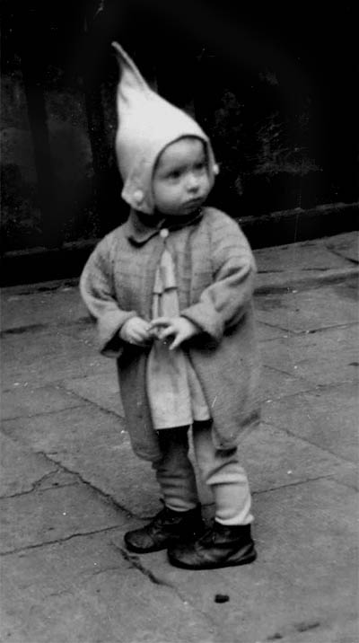
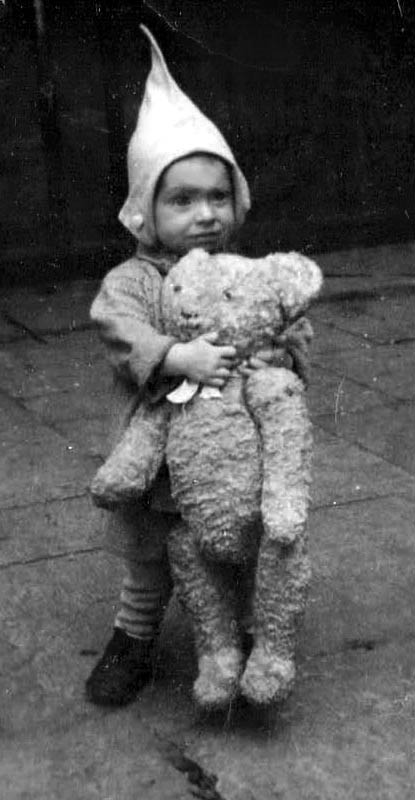
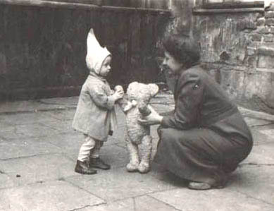
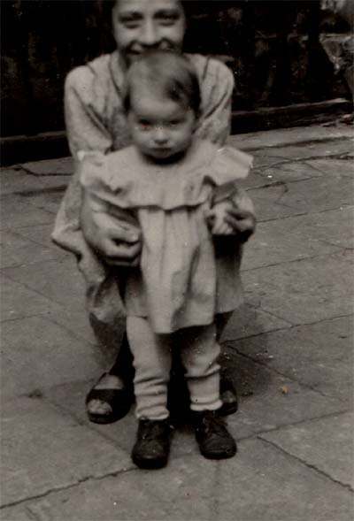
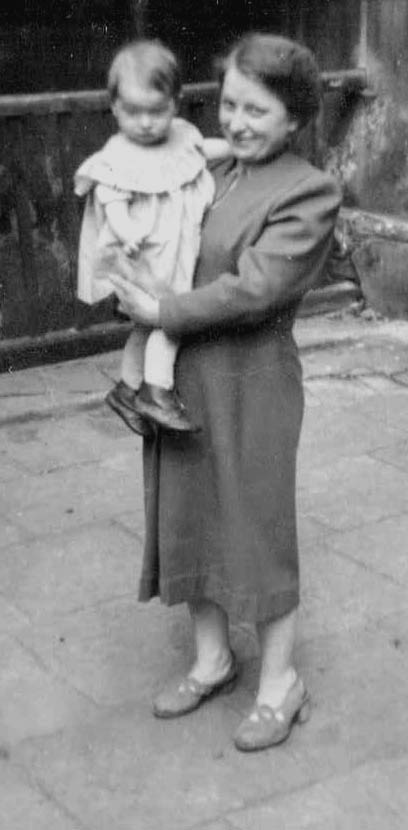
Byłam dzieckiem brzydkim. Miałam jasną, piegowatą cerę, na głowie sterczały mi we wszystkie strony rudawe proste włosy i byłam chuda. Przesadnie ruchliwa, wszystkiego ciekawa, męczyłam otoczenie, ale według niektórych dobrze rokowałam.
Rodzice niezbyt dbali o moje kreacje. To były czasy, kiedy dzieci ubierało się w cokolwiek. Pamiętami, że latami nosiłam brzydki, ponaciągany burawy sweterek (na zdjęciu obok). Swoją drogą przy mojej aktywności każde porządne ubranko niszczyło się za tydzień, a kokardki czemuś wpadały w błoto.
Uważam swoje dzieciństwo za nadzwyczajne. Mnogość doznań, doświadczeń, spotkania z ludźmi, dobrzy, kochający rodzice, spokój, bezpieczeństwo, a jednocześnie swoboda i ten rodzaj wolności, jaki uczy odpowiedzialności. Za to ostatnie jestem moim rodzicom najbardziej wdzięczna.
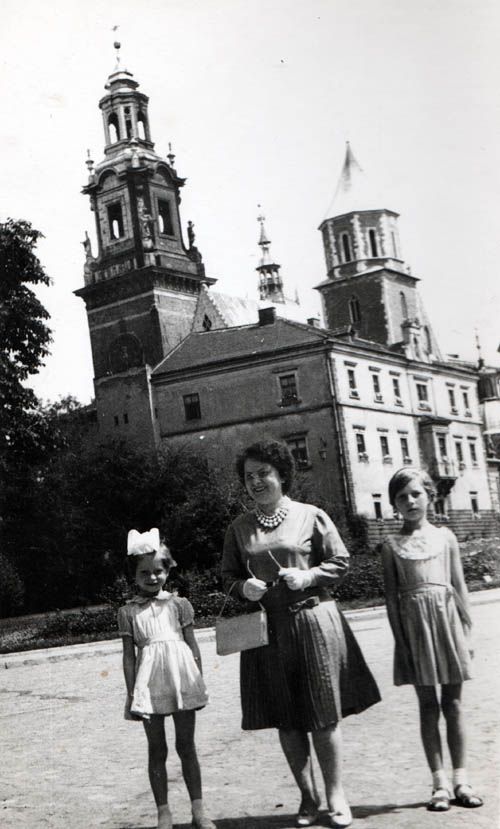
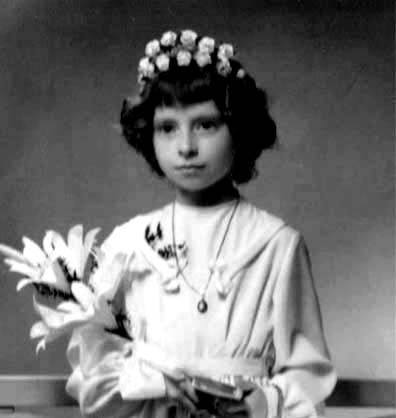
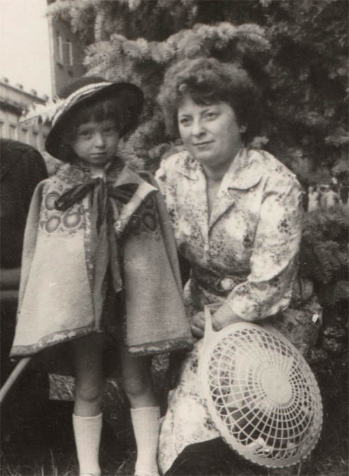
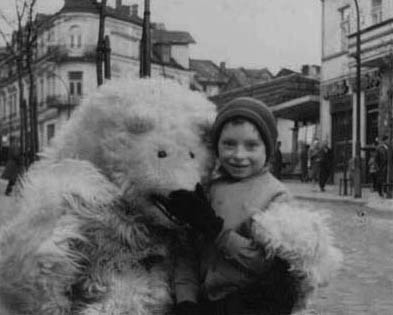
Jestem jedynaczką, ale nigdy nie czułam się z tego powodu samotna, bo zadbał to wyż demograficzny. Dzieci było wszędzie pełno. Na podwórku naszej niewielkiej rodzinnej kamienicy brakowało miejsca do zabaw, tyle nas było. A latem wyjeżdżałam na wieś do krewnych i tam dopiero miałam się z kim bawić!
Krakowskie dzieciństwo upływało mi na graniu w "zośkę", w "kiwanego", w "chłopka" i inne gry wymyślane często na poczekaniu. Przez znaczną część dnia na wąskim balkoniku wysiadywały nasze mamy, babcie, sąsiadki i ich znajome. Ukradkiem nadzorowały nasze szaleństwa, ale nie pamiętam, by interweniowały. Mężczyźni zjawiali się tam rzadko.
Prócz wyłożonego betonowymi płytami podwórka, mieliśmy do dyspozycji ogród. Mógł z łatwością uchodzić za czarodziejski, ale w istocie był brzydki. Otaczały go parkany i wysoki mur sąsiedniej fabryki powrozów Wałkowińskiego. Do piętnastej godziny każdego roboczego dnia maszyny tłukły się niemiłosiernie, ale jakoś nikomu to nie przeszkadzało. Mur rzucał cień na ogród i nic nie chciało tam rosnąć. Tylko pnącza miały się dobrze, co dodawało różnym zakątkom tajemniczości, a dla nas były to miejsca najdzikszych i często podejrzanych zabaw.
Wspomnienia wczesnego dzieciństwa wiążą się z moim ukochanym dziadkiem, ojcem mego taty. Całe życie mieszkał na wsi, ale był kiepskim gospodarzem, bo o niebo bardziej podobało mu się granie na pile, grzebieniu i skrzypkach zrobionych z końskiego włosia. Wyraźnie odżywał, kiedy przywożono go do Krakowa, by się mną opiekował. Był najbardziej tolerancyjną osobą na świecie, a wychowanie dziecka rozumiał jako dostarczanie mu uciech i za nic nie karania. Byliśmy parą niesfornych, nieprzewidywalnych osobników, zżytych nadzwyczajnie i trzymających się razem w krytycznych sytuacjach, to znaczy kiedy coś razem przeskrobaliśmy. Miałam zaledwie 6 lat, kiedy zmarł, ale pamiętam go bardzo dobrze. Czasem wydaje mi się nawet, że wyczuwam wokół zapach papierosów, jakie zwijałam mu z poślinionej gazety i grubego tytoniu. Palił je, wydychając cuchnący dym wprost na mnie, ale były to czasy, kiedy o szkodliwości tytoniu nikomu się nie śniło.
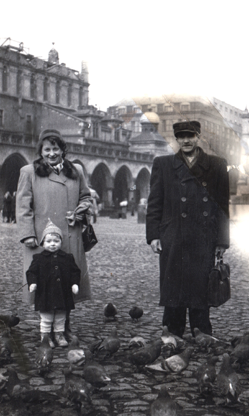
Wróć
Krakowskie dzieciństwo upływało mi na graniu w "zośkę", w "kiwanego", w "chłopka" i inne gry wymyślane często na poczekaniu. Przez znaczną część dnia na wąskim balkoniku wysiadywały nasze mamy, babcie, sąsiadki i ich znajome. Ukradkiem nadzorowały nasze szaleństwa, ale nie pamiętam, by interweniowały. Mężczyźni zjawiali się tam rzadko.
Prócz wyłożonego betonowymi płytami podwórka, mieliśmy do dyspozycji ogród. Mógł z łatwością uchodzić za czarodziejski, ale w istocie był brzydki. Otaczały go parkany i wysoki mur sąsiedniej fabryki powrozów Wałkowińskiego. Do piętnastej godziny każdego roboczego dnia maszyny tłukły się niemiłosiernie, ale jakoś nikomu to nie przeszkadzało. Mur rzucał cień na ogród i nic nie chciało tam rosnąć. Tylko pnącza miały się dobrze, co dodawało różnym zakątkom tajemniczości, a dla nas były to miejsca najdzikszych i często podejrzanych zabaw.
Wspomnienia wczesnego dzieciństwa wiążą się z moim ukochanym dziadkiem, ojcem mego taty. Całe życie mieszkał na wsi, ale był kiepskim gospodarzem, bo o niebo bardziej podobało mu się granie na pile, grzebieniu i skrzypkach zrobionych z końskiego włosia. Wyraźnie odżywał, kiedy przywożono go do Krakowa, by się mną opiekował. Był najbardziej tolerancyjną osobą na świecie, a wychowanie dziecka rozumiał jako dostarczanie mu uciech i za nic nie karania. Byliśmy parą niesfornych, nieprzewidywalnych osobników, zżytych nadzwyczajnie i trzymających się razem w krytycznych sytuacjach, to znaczy kiedy coś razem przeskrobaliśmy. Miałam zaledwie 6 lat, kiedy zmarł, ale pamiętam go bardzo dobrze. Czasem wydaje mi się nawet, że wyczuwam wokół zapach papierosów, jakie zwijałam mu z poślinionej gazety i grubego tytoniu. Palił je, wydychając cuchnący dym wprost na mnie, ale były to czasy, kiedy o szkodliwości tytoniu nikomu się nie śniło.
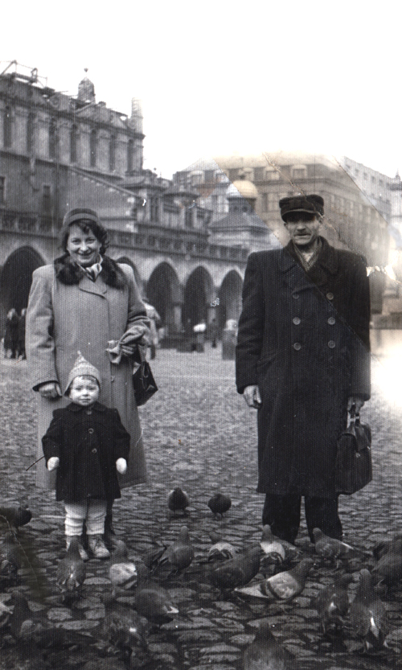
Wróć